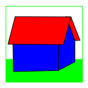
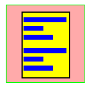
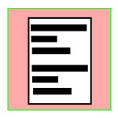
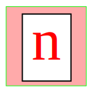
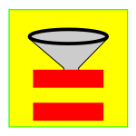
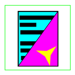
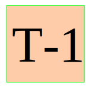

Sinottico
 collezione precedente
collezione precedente
Previous
Seleziona la Collezione precedente facendo riferimento alla Cronologia.
 collezione seguente
collezione seguente
Next
Seleziona la Collezione successiva facendo riferimento alla Cronologia.
 seleziona la collezione
seleziona la collezione
Select Collection.
Apri il menu di caricamento che consente di selezionare una Collezione di dati da una sorgente e di caricarla in memoria.Il menu Load Collection può anche essere usato per selezionare un'altra Collezione già in memoria.La sequenza dei passaggi da una Collezione all'altra viene memorizzato nella Cronologia.
 ricarica
ricarica
Reload collection.
Ricarica la Collezione.La funzione considerata ricarica la Collezione selezionata annullando le modifiche.NOTA: il funzionamento di questa opzione dipende dalla tipologia delle sorgenti dalle quali sono state caricare le collezioni, per cui in alcuni casi non può funzionare per motivi tecnici.
 salva tutte le modifiche
salva tutte le modifiche
Save All Changes.
Salva tutte le modifiche.
 salva con nome
salva con nome
Save As.
Salva i dati della Collezione selezionata in un file attribuendo un nuovo nome.
 rinfresca
rinfresca
Refresh view.
Rinfrescando la tabella ricaricando i valori della Collezione di dati selezionata.
 reset
reset
Reset
Ripristina lo stato iniziale del programma evitando all'utente di dover ricaricare la pagina Web.
sinottico
Dashboard
Mostra il Sinottico principale.
 luigi
Luigi
Mostra la home dell'utente.
aggiorna
Aggiorna
Aggiorna lo stato delle variabili mostrate nel sinottico.
mostra risorsa
Open Resources
Mostra la risorsa selezionata. Nel caso in cui la risorsa sia costituita da una collezione di dati la apre e la mostra sotto forma di tabella.
 edita risorsa
Edit Resources
edita
Edit
 piani di memoria
piani di memoria
Planes View.
Nel caso di matrici tridimensionali il menu Planes View consente di selezionare un diverso piano di memoria.
esegui ols2
Span another OLS
Apri due copie del programma OLS sincronizzate fra di loro.
 set reset
set reset
Data set/reset.
Apre il menu che consente di impostare o resettare i valori delle celle del campo selezionato, scrivendo un valore prefissato o il valore risultante dal calcolo di una formula espressa nel formalismo del linguaggio JavaScript.
 modifica il valore
modifica il valore
Change value.
Apre una scheda di dialogo in cui verrà mostrato il valore della cella selezionata integrato da eventuali informazioni supplementari offrendo, eventualmente, la possibilità di editare il suddetto valore. Le informazioni fornite e le possibilità concernenti la modifica del valore considerato dipendono dal tipo di dato selezionato.
 mostra il record
Edit Record.
La funzionalità Edit Tuple consente di esplorare la Collezione di dati selezionata rappresentando i record (cioè le tuple) sotto forma di schede anziché di righe di una tabella. La rappresentazione sotto forma di schede facilita lo studio dei record caratterizzati da un gran numero di campi permettendone una rappresentazione più compatta.
 nuovo record
nuovo record
New Record.
Apre una scheda di dialogo in cui verrà mostrato un record vuoto allo scopo di consentire l'inserimento di un nuovo record nella Collezione.
 nuovi record
New n Records.
Questa funzione apre una finestra richiedendo all'utente di specificare quanti nuovi record desidera aggiungere alla collezione. Se il numero inserito è maggiore di zero aggiunge altrettanti record vuoti in fondo alla tabella.
 cancella il record
cancella il record
Delete Record.
Elimina dalla Collezione il record selezionato.
 filtro javascript
filtro javascript
Filter JS.
Il "Filtro JS" consente di impostare delle condizioni di filtro avvalendosi delle piena potenza espressiva di JavaScript. Cliccando sull'icona si apre una scheda di dialogo in cui l'utente potrà inserire una condizione filtro scritta in JavaScript. Dopo la conferma il programma aggiornerà l'elenco dei record visualizzati mostrando esclusivamente le tuple che soddisfano la condizione impostata.
 wizard
wizard
Wizard.
Creazione di una condizione di filtro per mezzo di una procedura guidata (wizard).Cliccando su "Filter-2" si apre una scheda di dialogo che facilita la creazione di condizioni di filtro complesse che richiedono l'utilizzo di connettivi logici (AND, OR, ecc).Dopo la conferma il programma aggiornerà l'elenco dei record visualizzati mostrando esclusivamente le tuple che soddisfano la condizione impostata.
 filtro qbe
filtro qbe
Filter Query by Example.
Apre una scheda di dialogo in cui viene riprodotta l'organizzazione dei campi dei record della collezione considerata.L'utente può riempire uno o più campi inserendo delle stringhe di caratteri corrispondenti al prefissi da cercare.Dopo la conferma il programma aggiornerà l'elenco dei record visualizzati mostrando esclusivamente le tuple che soddisfano la condizione impostata.
 filtro stringa
filtro stringa
Filter String.
Il "Filtro Stringa" consente di impostare una condizione di ricerca facente riverimento al testo contenuto nelle caselle del campo considerato.Cliccando sull'icona si apre una scheda di dialogo in cui l'utente potrà inserire la stringa di caratteri che si desidera cercare. Dopo la conferma il programma aggiornerà l'elenco dei record visualizzati mostrando esclusivamente le tuple che soddisfano la condizione impostata.
 filtro uguale
Filter Equal.
Il "Filtro Uguale" seleziona tutti i record che presentano lo stesso valore della cella selezionata. Cliccando su di una cella di una tabella si seleziona sia un valore (quello della cella) che un campo (quello corrispondente alla colonna cui appartiene la cella selezionata).Cliccando sul "Filtro Uguale" si selezionano tutte le righe che nella colonna selezionata presentano lo stesso valore della cella selezionata.
 commuta la selezione
commuta la selezione
Toggle Filter.
Commuta la selezione tornando a mostrare l'intera collezione, cioè tutti i record che la compongono.
 inverti la selezione
inverti la selezione
Invert Filter.
Commuta il filtro mostrando i record che non soddisfano le condizioni impostate.
 annulla la selezione
annulla la selezione
Clear selection.
Annulla la selezione.Cancella la condizione di filtro precedentemente impostata.
 vai alla riga
vai alla riga
Go to line
Sposta il cursore selezionando il record specificato dall'utente (fra quelli soddisfacenti le condizioni di filtro).
 layout
layout
Layout
Mostra il tracciato record (Layout) della Collezione selezionata permettendo di modificarlo.
 field layout
field layout
Field Layout
Mostra le proprietà del tracciato record (Layout) della colonna selezionata.
configura vista utente
Config. UsrView
Apri il pannello che consente di editare i parametri associati alla Collezione selezionata.
Show Collection URL
Collection URL
Apre una finestra che mostra l'URL corrispondente alla collezione selezionata. NOTA: questa informazione talvolta potrebbe non essere disponibile.
 edita collezione
Edit Collection
Consente all'utente di prendere visione della collezione aprendo il file corrispondente con un editor di testo.
interprete javascript
JS-Int
Apre una finestra di terminale allo scopo di consentire all'utente di manipolare i dati delle collezioni avvalendosi dell'interprete JavaScript.
 calcolatrice
calcolatrice
Calculator
Mostra la calcolatrice.
Vediamo/Let's See
VLS
Apri l'applicazione "Vediamo/Let's See". Telecamera.
Editor WE4
WE4
Apri l'applicazione "Web Editor 4".
 configura
configura
Configure.
Apre la finestra di configurazione.
 aiuto
aiuto
Help.
Apre la schermata di Help contestuale mostrando le informazioni concernenti le funzioni disponibili nel contesto considerato.
 informazioni
informazioni
About.
Mostra le informazioni generali concernenti l'autore e le condizioni di licenza.
 Percorso
Percorso
PATH
Seleziona percorso
 carica
carica
Load PATH
Apre una scheda di esplorazione del filesystem mostrando il contenuto delle directory di cui è stato specificato il path.
imposta
Submit PATH
Imposta il percorso (PATH).
 test-1
Test-1
Codice di prova.
 comando LN
comando LN
NL command
Funzione nulla.
esegui
Submit command
Esegui Comando